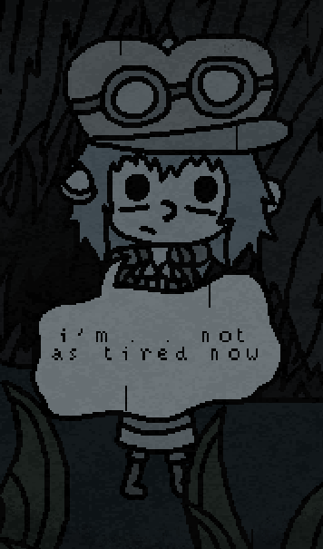
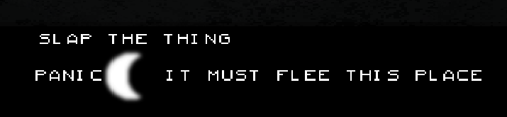
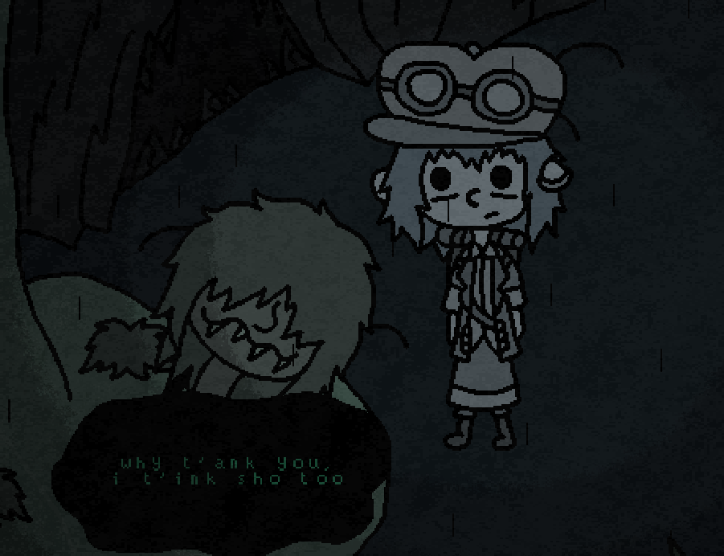

Game 1, Sand: A Superfluous Game
Released as a sequel to "The Superfluous" (which was unknown to me until I started this review), Sand is an open world, post-apocalyptic, pixel-rendered, survival, forager-esque experience that takes place on what was once Alaska, now curiously presented as a desert.
On first launch, Sand places the player in a desolate landscape with tumbleweeds galloping across the low-rendered ground, all while being escorted by a soothing acoustic guitar playing a slow shuffle of a theme, further accompanied by the occasional hollow gust of wind. In contrast to the bleak design, I found this welcome a very warm one, and couldn't wait to get started.
Gameplay
Controls are standard for any top-down, PC game. WASD to move, Tab for inventory, E to interact, the works. Players can move faster by pressing shift, that's always a nice touch. The first available interaction is that of a dog, found right next to where you spawn. Upon following the prompt "press e to pet dog", you'll be greeted with an enthusiastic bark, akin to that of the dog in Stardew Valley, another pixel-heavy, top-down title I enjoy.
(You can also rename the dog and change its breed, another nice touch. A goal of mine is to one day have a pug named Magnus.)
The only building in sight is a cottage left in tatters, though walking inside will acquaint with the first NPC of Sand. Covered in dust and rather goofy, Edie is a robot that regains sentience when you press his restart button. He acts as the tutorial while simultaneously handing out quests, granting a feeling of progress, which (in my opinion) help these types of survival in terms of maintaining player interest.
Upon completing the first few quests, the player will learn the basic mechanics of the game. Items can be acquired by either breaking or crafting. Water is only used for travelling outside the default square of land. Crafting is done with a few simple clicks in an easily navigable menu. From here, the player continues quest completion and progresses through a “rebuild and save humanity” story.
Meta/Meaning?
Edie is a quirky character, there’s no doubt about that. His humor is bizarre and self-aware, and by explaining the controls to the player, he recognizes that this is indeed a game, and does not shy away from that.
Personally, I found the meaning to be hidden within the overall tone of the game. From the hour and a half that I played, there is no alternative to the desert you find at the start. Dust storms are common, any other NPCs don’t stop to say howdy, unless you have coin that is, nights are black as tar, and everything is shrouded in bleakness. The meaning is simple, we have to save our world before it looks anything close to how it does in Sand.
Ok, Let's Wrap it Up
I thoroughly enjoyed my brief time with Sand. This comes as no surprise, as I already enjoy witty humor, pixelated graphics, and crafting-based progression systems. Needless to say, I'm a bit biased because of these design choices, so I urge the reader to try it out for themselves. There is a free option in terms of download, or a set-your-own-amount-of-payment option for the philanthropic among us. I'll leave a link here, feel free to visit and hop into the dusty world of Sand.
Game 2, Whispers in the Sky
While only about 15 minutes in length, Whispers in the Sky is a browser-based game with potential to become a wonderful full-released experience. The game takes place in an eerie, drab woods, while following, literally following a visibly tired, adventure clad protagonist. It's important that I make the dinsctinction of following this traveller, because the player does not play as them, rather, the "wind" around them. This game is much more dense with story based content than sand, but comes second-fiddle in terms of gameplay.

Gameplay
The only control provided to the player is clicking. Clicking the mouse fulfills the only two actions possible in the game: progressing dialogue between characters, and choosing messages to send to the protagonist. Again, it's important to distinguish between this mechanic and others. In a game like Mass Effect, the player chooses actions/phrases that the protagonist will either do or say, because the player is given control over them. In this game, the player chooses text options, rather degrading and crude text options at that, and the protagonist responds to these prompts verbally, sometimes crossing in between their interactions with others. The player isn't given control of the protagonist, (unless the protagonist says "ok, which way should I go", which only happens twice) which I find very interesting, and helpful to the overall experience. It's a good way to put everything into perspective.

There are at least 4 NPC's with which the player can encounter, ranging in attitudes from curious, flirtatious, and assertive. It is during these encounters that the player sees how the protagonist (which I will now call rain reader, as this was explained by an NPC encounter) struggles, but ultimately concedes to the whispers selected by the player. The player is given prompts that are degrading towards both the player and whomever they're talking to, while expressing impatience and distaste towards the concept of stopping to chat with anyone at all. This is a really interesting turn on the make-your-own-choice mechanic, because there's no escaping the negative attitude that has already imprinted itself. In other games, a group of 4 text options will contain, on average, at least 1 kind message, 1 unkind message, and 2 stuck somewhere in the middle. Whispers in the sky gives the player on average 2 distasteful options, and 1 that might not leave a pit in their stomach. Honestly, it's a frustrating experience, because I personally want to be kind to characters, and find it hard to progress when that option isn't available.

Meta/Meaning?
I've never been one to pick up hints, but it's rather obvious that this game illustrates the struggles of multiple mental illnesses. I'm no psychologist, but I believe there were themes of at least depression, anxiety, and schizophrenia. Schizophrenia is referenced by the game's core mechanic, which represents uncontrollable voices in the head. What these voices say leads me to suspect anxiety and depression are at play. When walking towards a cliff, the player has the option of suggesting that the rain reader jump off, to which they replay "no, I'm not there yet". One thing I've neglected to mention is the objectifying language used by the wind. I can understand using "they" when referring to a character with an unspecified gender, but the wind refers to our rain reader as "it", which ties in to the degrading language I did mention. This too makes for an interesting experience, but not one that I necessarily wish to have again.
I really enjoy the style of Whispers in the Sky, and the thematic message is present, concise, and not overplayed or tacky. The rain reader is endearing, for the 15 minutes we get with them, and they make it worth the time. I would certainly recommend this game to a reader, though I wouldn't personally conduct multiple playthroughs, because spoiler alert: the ending is lackluster. Play it here, right in your browser.